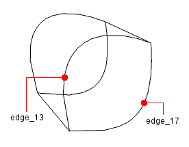
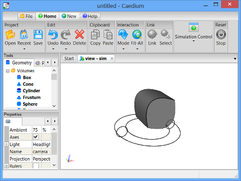

Loft, Stitch, and Unite
Use the loft and stitch functions to create a volume, then unite it with another volume.
Goals
In this tutorial, you will learn how to:
- Create a face by lofting edges
- Stitch edges together to form a face
- Stitch faces together to form a volume
- Unite two volumes into one
Assumptions
- You have activated the Caedium Builder add-on or Caedium Professional.
- You are familiar with Caedium essentials.
Create a Box
Select the Geometry Tool Palette. Double-click the Volumes->Box tool and select Done to create a box (volume) in the View Window.
Create a Face Using Loft
Select the Faces->Loft tool and turn on the Keep Operands property in the Properties Panel.
You may need to scroll down through the Geometry Tool Palette list to find the Loft tool.
Turning on the Keep Operands property means that the edges you use to create the new face will not be deleted once the face is created.
Drag and drop the Faces->Loft tool onto edge_1, as shown below.
Note that the edges may have different names in your example, so use the diagram below as a guide for the edges to be selected.
Double-click edge_1 in the Select dialog to select the edge. Select Select/Deselect from the menu, then right-click on edge_2. Double-click on edge_2 in the Select dialog to select it. Select Select/Deselect from the menu, then right-click on edge_10. Double-click on edge_10 in the Select dialog to select it. Select Done to create a new face.
In the Home Toolbar click the Undo button  to undo the last change if you make a mistake.
to undo the last change if you make a mistake.
Use Loft to Create a Second Face
Drag and drop the Faces->Loft tool onto edge_1, then select edge_9, and then select edge_10 (as shown below) to create a second face.
Again, the edges in your example may be named differently, so use the diagram below as a guide.

Delete the Box
Right-click on an edge of the box. Double-click on volume in the Select dialog, and then select Delete to delete the box.
Left-click-and-drag the mouse in the View Window to rotate the view as shown below.
Stitch Edges into Faces
Select the Faces->Stitch tool and turn on the Keep Operands property in the Properties Panel.
Drag and drop the Faces->Stitch tool onto edge_13 (as shown below) and double-click edge_13 in the Select dialog to select it.
Note that the edges may have different names in your example, so use the diagram below as a guide for the edges to be selected.

Select Select/Deselect from the menu, then right-click on edge_17. Double-click edge_17 in the Select dialog to select it, then select Done to stitch the front face.
Drag and drop the Faces->Stitch tool onto edge_14, and then select edge_18 (as shown below) to stitch the back face.
Again, the edges in your example may be named differently, so use the diagram below as a guide.
Shade the Four Faces
To select all faces, right-click in the View Window, double-click on sim->Faces, and then select Properties from the menu.
In the Properties Panel, turn off the Transparent property to shade the four faces.
Stitch the Faces into a Volume
Drag and drop the Volumes->Stitch tool onto the View Window. Double-click sim->Faces, then select Done to stitch the four faces together into a volume.
Note that Caedium used the shaded faces to create the new volume and then deleted those faces, because the Keep Operands option for the Stitch tool was not turned on.
To shade the faces of the new volume, right-click in the View Window, double-click on sim->Faces, and then select Properties from the menu. In the Properties Panel, turn off the Transparent property to shade the faces.
Create a Torus
Drag and drop the Volumes->Torus tool onto the View Window. Double-click sim in the Select dialog and select Done to create a torus (volume_2).
In the Home Toolbar click the Fit-All button  to see all of the geometry in the View Window.
to see all of the geometry in the View Window.

Translate the Torus
To translate the torus to a new location in the View Window, select the Transforms->Translate tool. In the Properties Panel set Translate to [-5 5 5]. Press Enter on the keyboard to apply the changes to the Properties Panel.
Drag the Transforms->Translate tool and drop it directly onto an edge of the torus. Select Done to translate the torus.
Unite the Two Volumes
Drag and drop the Booleans->Unite tool onto the View Window. Double-click sim->Volumes and then click Done to unite the two volumes into one volume (volume_3).
Right-click on an edge of volume_3, double-click volume_3->Faces and then select Properties. Turn off the Transparent property in the Properties Panel to shade the faces of volume_3.
Feedback
Questions? Ideas? Problems?